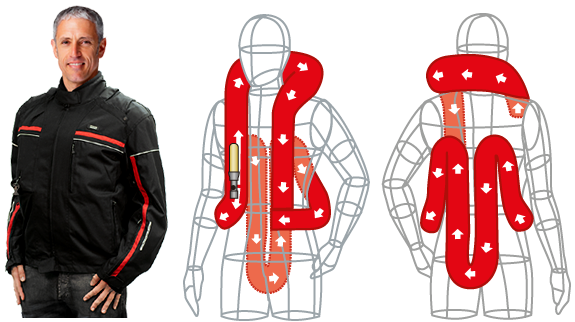

Mugen Denko. O criador da tecnologia e o mais experiente fabricante de equipamentos de AirBag para proteção de motociclistas do mundo.
O Air Bag é uma inovação desenvolvida e patenteada com exclusividade pela Mugen Denko do Japão, uma empresa pioneira na produção de equipamentos vitais para a segurança de motociclistas.
Com um trabalho de pesquisa e de desenvolvimento científico que teve início em 1995, apenas três anos depois a Mugen Denko apresentou o Air Bag ao mundo, conquistando a Europa e os Estados Unidos com um equipamento tão eficiente e inovador que passou a integrar a Força Policial de países com os mais elevados padrões de segurança de trânsito do mundo como Japão, Estados Unidos, Inglaterra, Alemanha, França, Espanha e Itália.
Aprovado pela Japan Automobile Research Institute - JARI e contando com o selo de aprovação da Comunidade Europeia - CE, a partir de 1999 a tecnologia de air bag Denko está presente em suas marcas próprias Air Bag Denko, Hit-Air e Eggparka e em algumas das mais destacadas marcas de acessórios para motos da Europa, como a premiada SPIDI italiana, a IXS da Suíça e a LOIS e BMW Motorrad da Alemanha.
Em caso de acidente em que a pessoa é lançada da motocicleta, o Air Bag Denko infla em apenas 0,25 segundo protegendo áreas sensíveis do corpo como coluna cervical, cóccix, tórax e abdômen.
Para empresas e frotistas
- 1995
- Kenji Takeuchi cria o conceito de uma vestimenta com sistema de air bags para motociclistas.
- 1996
Protótipo de colete é apresentado no Japão e atrai a atenção da imprensa mundial.
- 1998
A Mugen Denko aprimora o protótipo e a inovação é condecorada com a Medalha de Bronze na Convenção de Equipamentos da Polícia Metropolitana de Tóquio. O equipamento passa a ser adotado pela corporação.
- 1999
- O Air Bag é apresentado à Europa com grande sucesso. - Selo de aprovação da Comunidade Europeia – CE. - A SPIDI (Itália), IXS (Suíça) e LOUIS (Alemanha) aprovam o sistema, que conquista confiabilidade em todo o continente. - Artigos publicados nas revistas Popular Science e Newsweek. - Início da produção comercial do equipamento. - Medalhas de Ouro e Prata na Convenção Mundial de Inventores, na Bélgica
- 2000
SPIDI e IXS lançam suas marcas com tecnologia Denko no Show Mundial de Motocicletas de Munique - Alemanha. Sucesso absoluto. - A versão para Hipismo é premiada com Troféu de Ouro no "Salon du Cheval" em Paris.
- 2001
Mugen Denko cria versão com air bags removíveis. - São fechados contratos de fornecimento para a LOUIS (Alemanha) e COLORI (Grécia).
- 2003
- Safety Air Bag é adotado por toda a Força Policial do Japão. - Good Design Award - Japan Invention Contest.
- 2004
- A Força Policial da Espanha adota o equipamento.
- 2005
- Grande Prêmio no JPMS Motorcycle Show da França. - Em parceria com a YKK do Japão, a Mugen Denko desenvolve o Conector de Acionamento Automático. - Utilizada pela primeira vez no Rally Dakar pelo piloto brasileiro Jean de Azevedo.
- 2006
- Assinado acordo com a OEM - Original Equipment Manufacturer. - O equipamento é adotado pela Cavalaria da Guarda Imperial do Japão. - Prêmio Novo Produto Tecnológico - Korea Daily Newspaper
- 2007
- O Ministério da Economia japonês avaliza plano de expansão de negócios mundial da Denko.
- 2008
- Testes de Impacto pelo JARI (Instituto de Pesquisas Automotivas do Japão) comprovam eficiência do Air Bag Denko. - Aprovação da FFE – Fedération Française D’Equitation.
- 2009
- A tecnologia evolui: o tempo de ação é reduzido para 0,5 segundo.
- 2010
- A Mugen Denko cria novos e mais aperfeiçoados modelos. O tempo de acionamento é reduzido para 0,25 segundo.
- 2011
- O Air Bag Denko é lançado no Brasil.